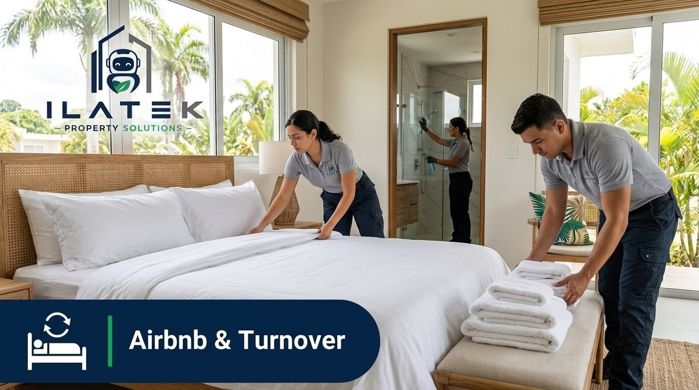
Limpieza Airbnb y Rentals en Puerto Rico | Ilatek
airbnb-turnover ✓
servicios/airbnb-turnover/es/landing-pages/ghl-airbnb-turnover-landing.html
ver en el CDN ↗
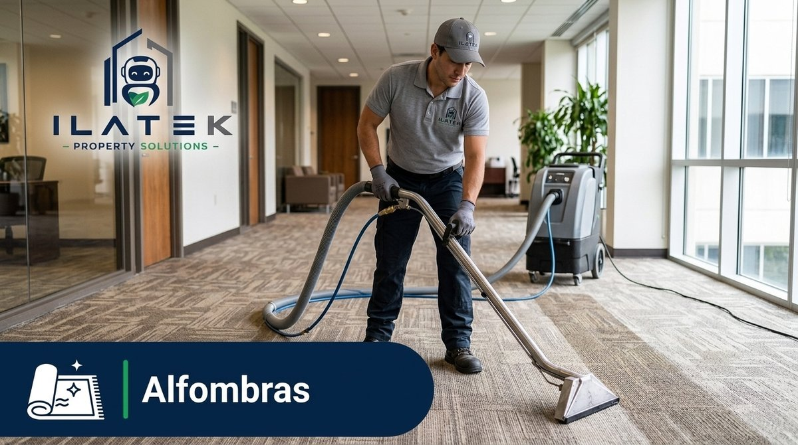
Limpieza de Alfombras en Puerto Rico | Ilatek
alfombras ✓
servicios/alfombras/es/landing-pages/ghl-alfombras-landing.html
ver en el CDN ↗
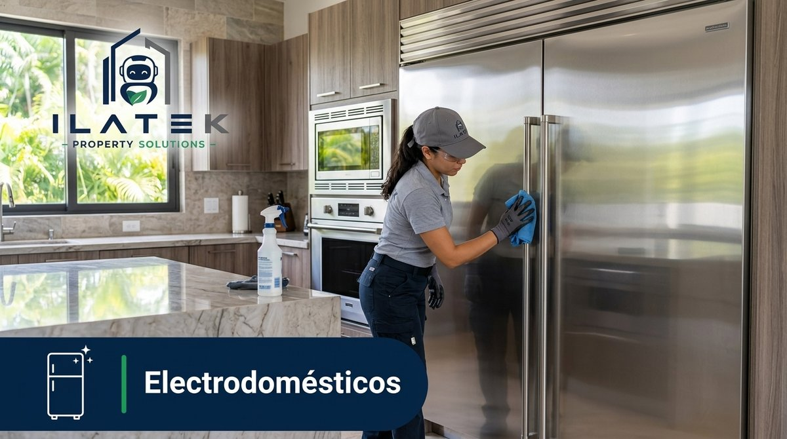
Limpieza de Electrodomésticos en Puerto Rico | Ilatek
electrodomesticos ✓
servicios/electrodomesticos/es/landing-pages/ghl-electrodomesticos-landing.html
ver en el CDN ↗
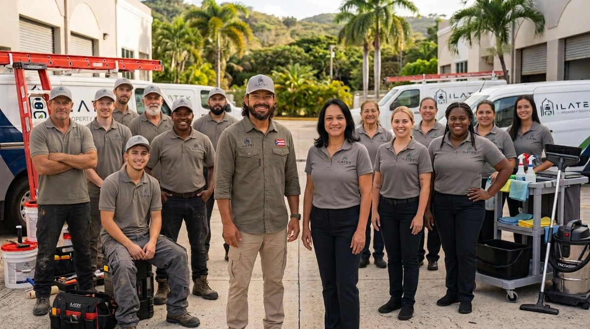
Limpieza y Mantenimiento de Propiedades en Puerto Rico | Ilatek
home ✓
home/es/landing-pages/ghl-home-multiservicios.html
ver en el CDN ↗
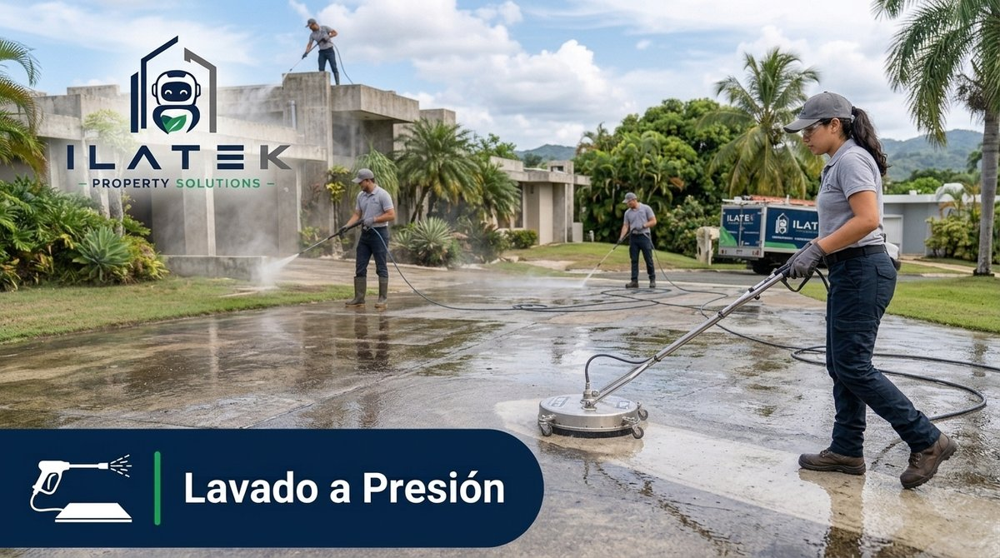
Lavado a Presión en Puerto Rico | Ilatek
lavado-a-presion ✓
servicios/lavado-a-presion/es/landing-pages/ghl-lavado-a-presion-landing.html
ver en el CDN ↗
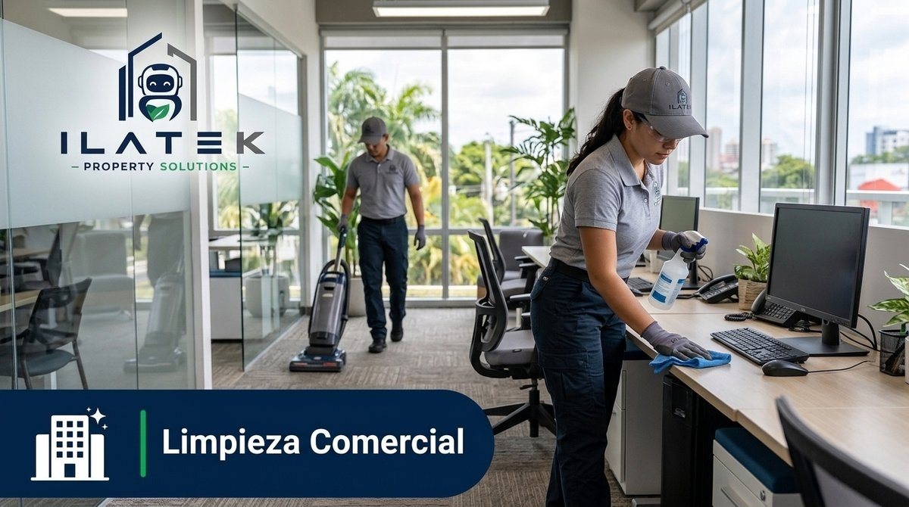
Limpieza Comercial en Puerto Rico | Ilatek
limpieza-comercial ✓
categorias/limpieza-comercial/es/landing-pages/ghl-limpieza-comercial-landing.html
ver en el CDN ↗
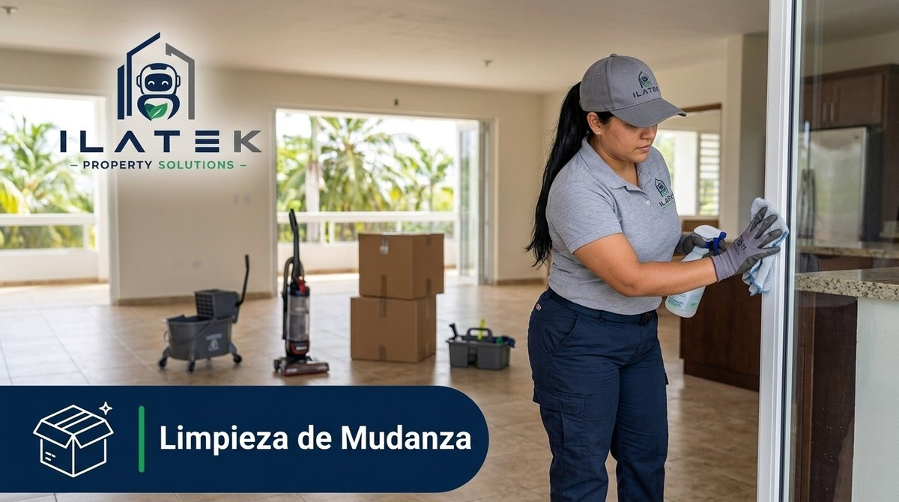
Limpieza de Mudanza en Puerto Rico | Ilatek
limpieza-de-mudanza ✓
servicios/limpieza-de-mudanza/es/landing-pages/ghl-limpieza-de-mudanza-landing.html
ver en el CDN ↗
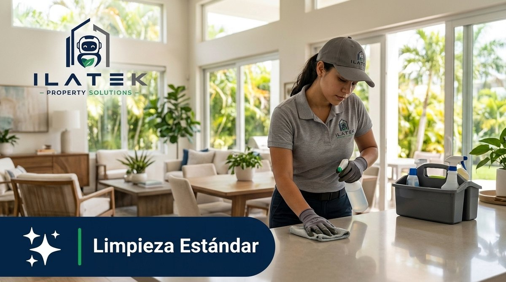
Limpieza Estándar en Puerto Rico | Ilatek
limpieza-estandar ✓
servicios/limpieza-estandar/es/landing-pages/ghl-limpieza-estandar-landing.html
ver en el CDN ↗
Limpieza Industrial en Puerto Rico | Ilatek
limpieza-industrial ✓
categorias/limpieza-industrial/es/landing-pages/ghl-limpieza-industrial-landing.html
ver en el CDN ↗
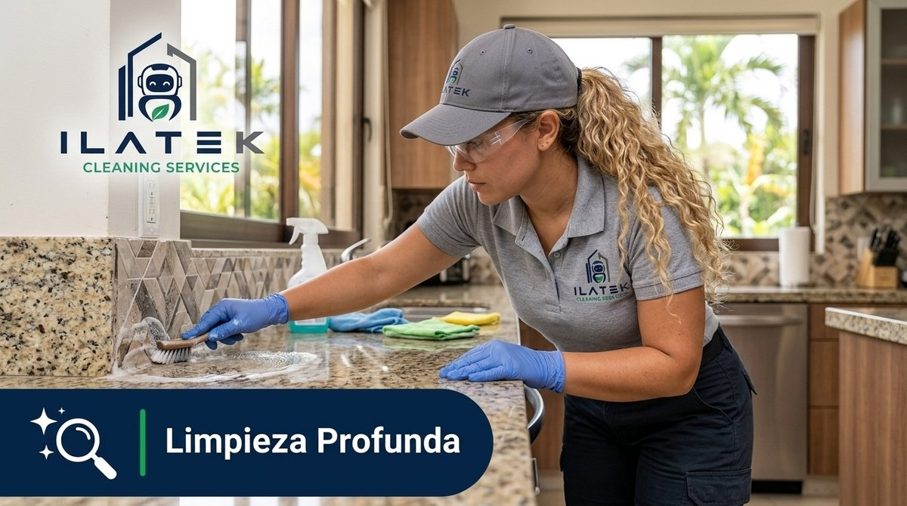
Limpieza Profunda en Puerto Rico | Ilatek
limpieza-profunda ✓
servicios/limpieza-profunda/es/landing-pages/ghl-limpieza-profunda-landing.html
ver en el CDN ↗
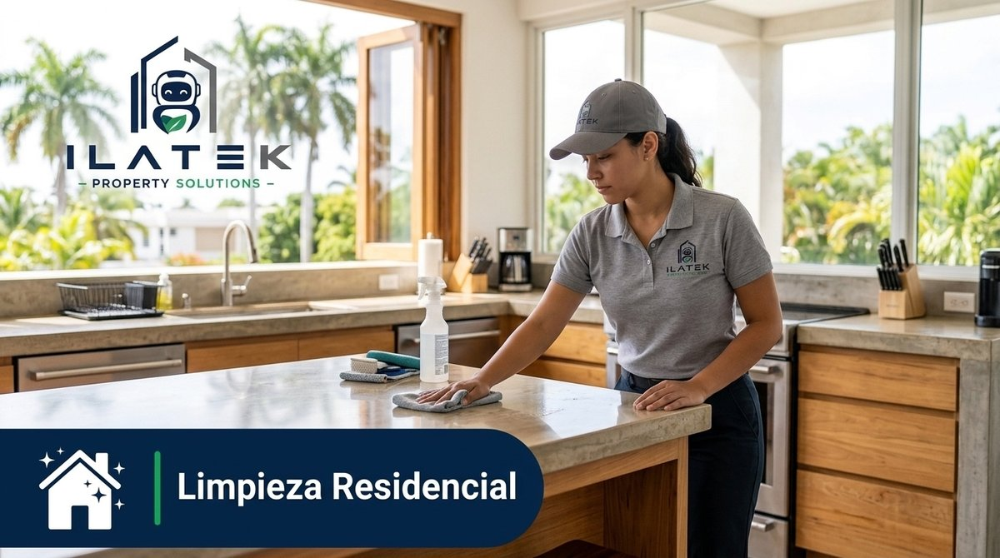
Limpieza Residencial en Puerto Rico | Ilatek
limpieza-residencial ✓
categorias/limpieza-residencial/es/landing-pages/ghl-limpieza-residencial-landing.html
ver en el CDN ↗
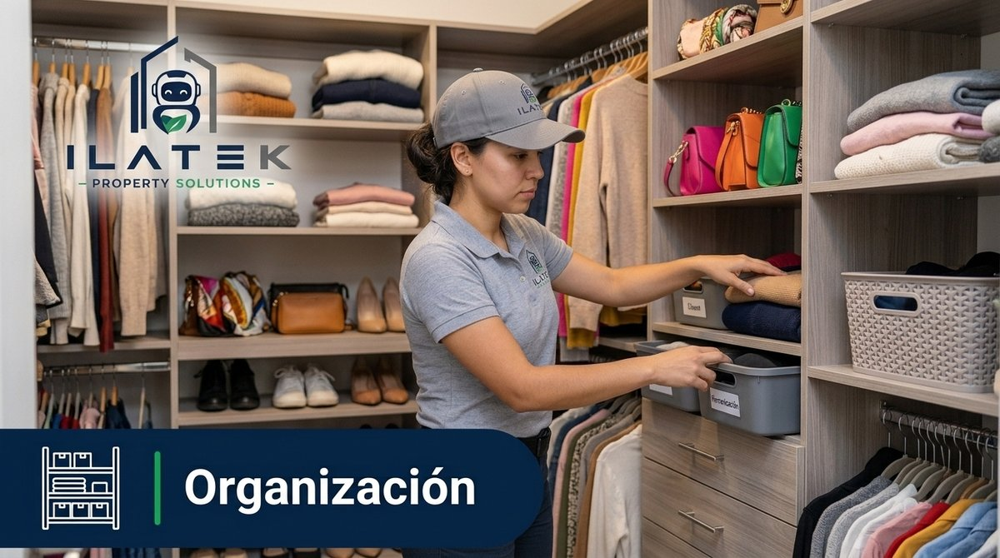
Organización del Hogar en Puerto Rico | Ilatek
organizacion ✓
servicios/organizacion/es/landing-pages/ghl-organizacion-landing.html
ver en el CDN ↗
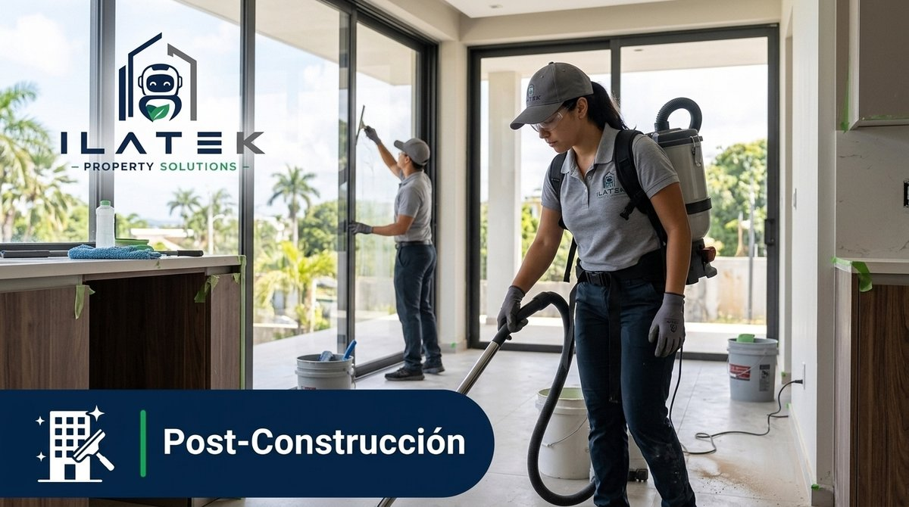
Limpieza Post-Construcción en Puerto Rico | Ilatek
post-construccion ✓
servicios/post-construccion/es/landing-pages/ghl-post-construccion-landing.html
ver en el CDN ↗

Servicios de Limpieza en Puerto Rico | Ilatek
servicios ✓
categorias/limpieza/es/landing-pages/ghl-servicios-landing.html
ver en el CDN ↗
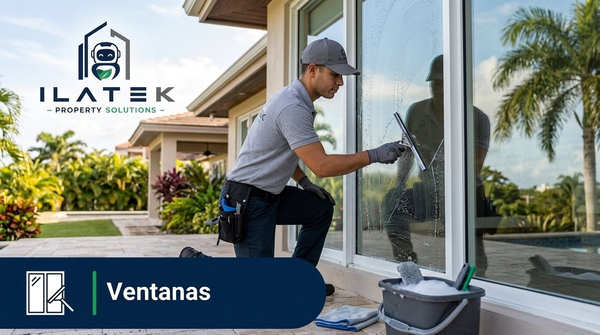
Limpieza de Ventanas en Puerto Rico | Ilatek
ventanas ✓
servicios/ventanas/es/landing-pages/ghl-ventanas-landing.html
ver en el CDN ↗